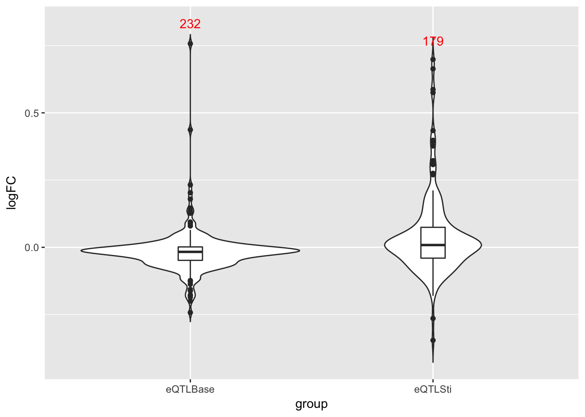
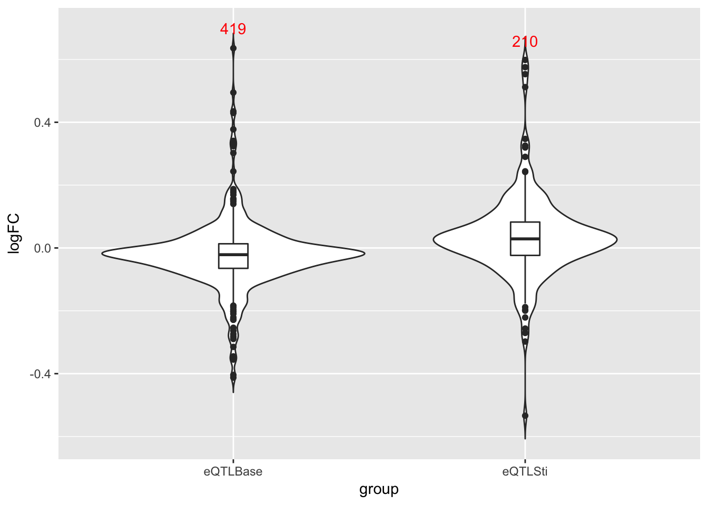
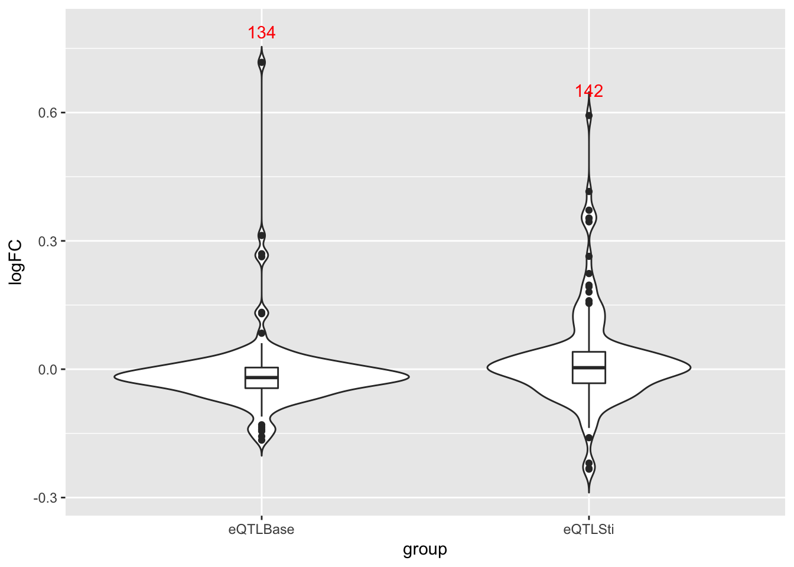
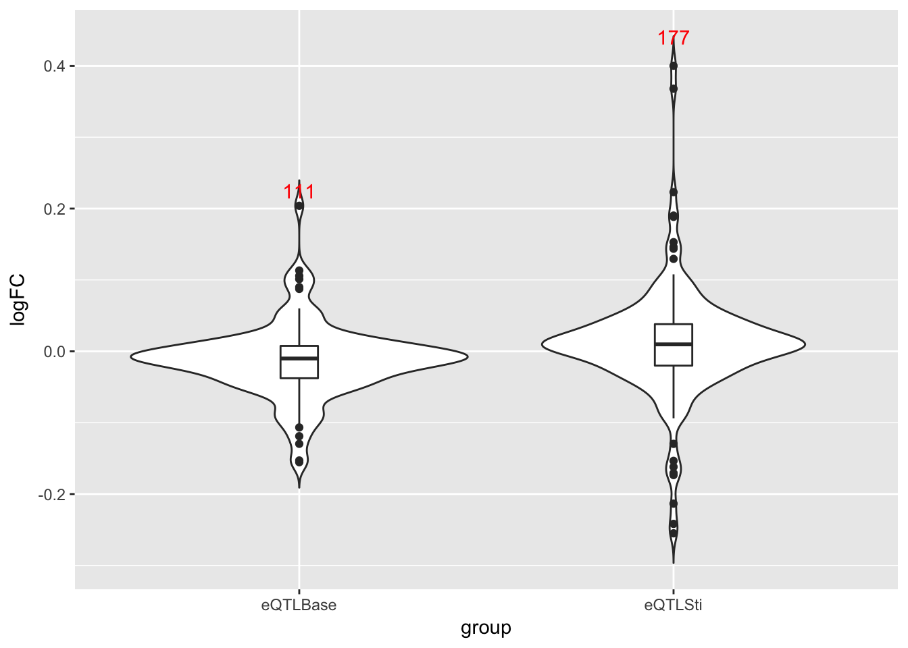
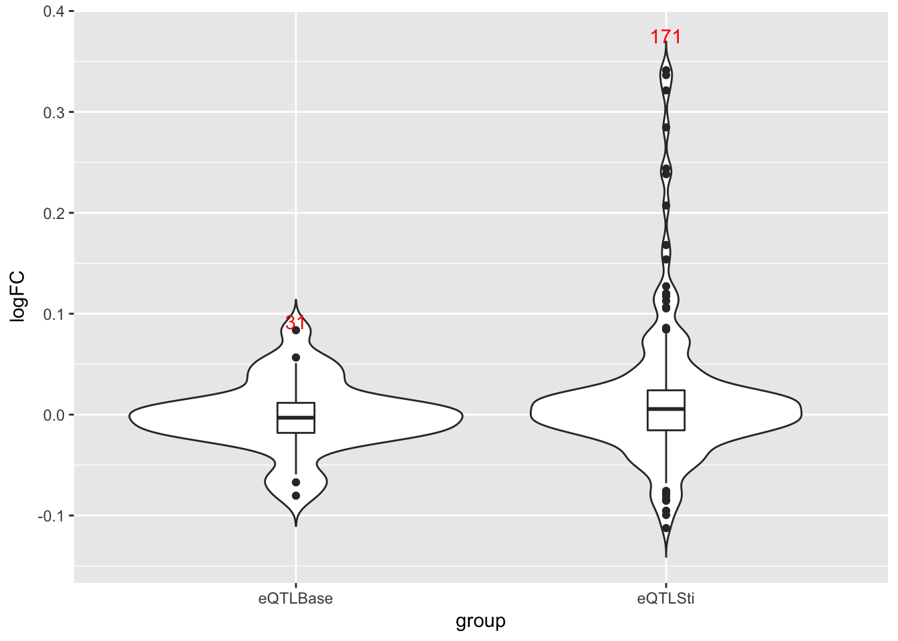
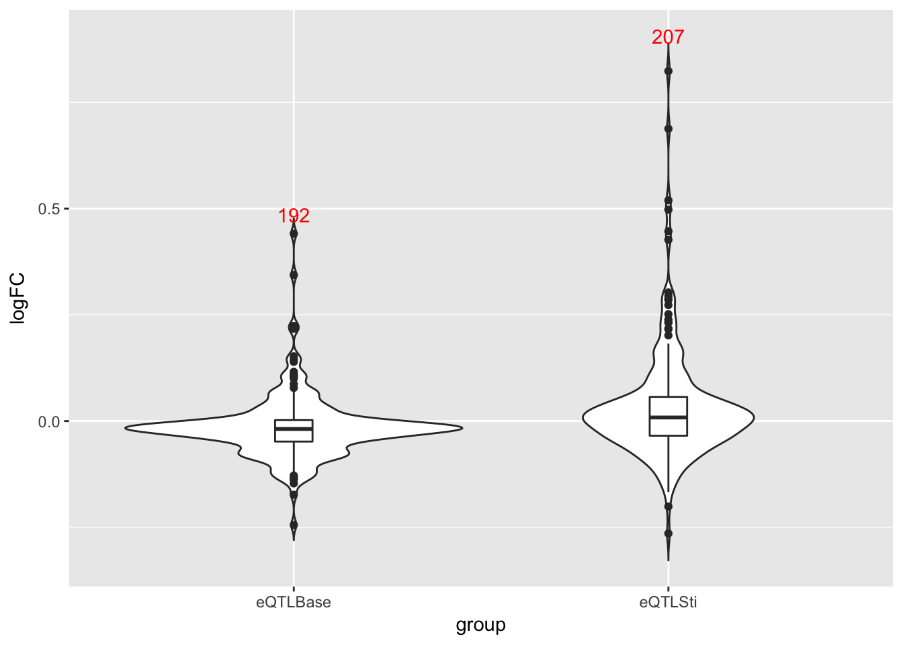

Warning in as.POSIXlt.POSIXct(Sys.time()): unknown timezone 'zone/tz/2017c.
1.0/zoneinfo/America/Chicago'Last updated: 2017-12-05
Code version: 5917b70
library(lattice)
library(ggplot2)
library(mashr)Loading required package: ashrload('../data/processed.RData')
gene.names.pro = processed.data$ctrl$V4
data = readRDS('../data/ImmuneQTLSummary.4MASH.rds')
data$max$se = data$max$beta/data$max$z
data$null$se = data$null$beta / data$null$z
gene.names.data = substr(row.names(data$max$beta),1,12)
K = 10
P = 5
vhat = 1# EZ
resEZ = readRDS('../output/ImmuneEZ.V1.center.mash_model.K10.P5.rds')
resEZ$result = readRDS('../output/ImmuneEZ.V1.center.mash_posterior.K10.P5.rds')eQTL index in each group
thre = 0.005
eQTL.base = get_significant_results(resEZ, conditions=1, thresh = thre)
eQTL.lps6h = get_significant_results(resEZ, conditions=2, thresh = thre)
eQTL.lps90 = get_significant_results(resEZ, conditions=3, thresh = thre)
eQTL.mdp6h = get_significant_results(resEZ, conditions=4, thresh = thre)
eQTL.mdp90 = get_significant_results(resEZ, conditions=5, thresh = thre)
eQTL.rna6h = get_significant_results(resEZ, conditions=6, thresh = thre)
eQTL.rna90 = get_significant_results(resEZ, conditions=7, thresh = thre)eQTL index in the processed data
eQTL.index = list(base=which(gene.names.pro %in% gene.names.data[eQTL.base]),
lps6h=which(gene.names.pro %in% gene.names.data[eQTL.lps6h]),
lps90=which(gene.names.pro %in% gene.names.data[eQTL.lps90]),
mdp6h=which(gene.names.pro %in% gene.names.data[eQTL.mdp6h]),
mdp90=which(gene.names.pro %in% gene.names.data[eQTL.mdp90]),
rna6h=which(gene.names.pro %in% gene.names.data[eQTL.rna6h]),
rna90=which(gene.names.pro %in% gene.names.data[eQTL.rna90]))logFC.compare = function(groupname){
result = c()
group = c()
sti.data = processed.data[[groupname]]
# eQTL base only
base.only = setdiff(eQTL.index$base, eQTL.index[[groupname]])
n = length(base.only)
group = c(group, rep('eQTLBase', n))
# base
base.mean = apply(processed.data$ctrl[base.only, 5:138],1 ,mean, na.rm=TRUE)
# sti
sti.mean = apply(sti.data[base.only, 5:138],1 ,mean, na.rm=TRUE)
result = c(result, log2(sti.mean/base.mean))
# sti only
sti.only = setdiff(eQTL.index[[groupname]], eQTL.index$base)
n = length(sti.only)
group = c(group, rep('eQTLSti', n))
# base
base.mean = apply(processed.data$ctrl[sti.only, 5:138],1 ,mean, na.rm=TRUE)
# sti
sti.mean = apply(sti.data[sti.only, 5:138],1 ,mean, na.rm=TRUE)
result = c(result, log2(sti.mean/base.mean))
return(data.frame(logFC=result, group=factor(group, c('eQTLBase', 'eQTLSti'))))
}
give.n <- function(x){
return(c(y = max(x)*1.1, label = length(x)))
# experiment with the multiplier to find the perfect position
}lps90.logFC = logFC.compare('lps90')
g = ggplot(lps90.logFC, aes(x = group, y = logFC)) + geom_violin(trim = FALSE)
g = g + geom_boxplot(width=0.1) + stat_summary(fun.data = give.n, geom = "text", color='red')
g
lps6h.logFC = logFC.compare('lps6h')
g = ggplot(lps6h.logFC, aes(x = group, y = logFC)) + geom_violin(trim = FALSE)
g = g + geom_boxplot(width=0.1) + stat_summary(fun.data = give.n, geom = "text", color='red')
g
mdp90.logFC = logFC.compare('mdp90')
g = ggplot(mdp90.logFC, aes(x = group, y = logFC)) + geom_violin(trim = FALSE)
g = g + geom_boxplot(width=0.1) + stat_summary(fun.data = give.n, geom = "text", color='red')
g
mdp6h.logFC = logFC.compare('mdp6h')
g = ggplot(mdp6h.logFC, aes(x = group, y = logFC)) + geom_violin(trim = FALSE)
g = g + geom_boxplot(width=0.1) + stat_summary(fun.data = give.n, geom = "text", color='red')
g
rna90.logFC = logFC.compare('rna90')
g = ggplot(rna90.logFC, aes(x = group, y = logFC)) + geom_violin(trim = FALSE)
g = g + geom_boxplot(width=0.1) + stat_summary(fun.data = give.n, geom = "text", color='red')
g
rna6h.logFC = logFC.compare('rna6h')
g = ggplot(rna6h.logFC, aes(x = group, y = logFC)) + geom_violin(trim = FALSE)
g = g + geom_boxplot(width=0.1) + stat_summary(fun.data = give.n, geom = "text", color='red')
g
sessionInfo()R version 3.4.2 (2017-09-28)
Platform: x86_64-apple-darwin15.6.0 (64-bit)
Running under: macOS High Sierra 10.13.1
Matrix products: default
BLAS: /Library/Frameworks/R.framework/Versions/3.4/Resources/lib/libRblas.0.dylib
LAPACK: /Library/Frameworks/R.framework/Versions/3.4/Resources/lib/libRlapack.dylib
locale:
[1] en_US.UTF-8/en_US.UTF-8/en_US.UTF-8/C/en_US.UTF-8/en_US.UTF-8
attached base packages:
[1] stats graphics grDevices utils datasets methods base
other attached packages:
[1] mashr_0.2-4 ashr_2.1-27 ggplot2_2.2.1 lattice_0.20-35
loaded via a namespace (and not attached):
[1] Rcpp_0.12.14 compiler_3.4.2 git2r_0.19.0
[4] plyr_1.8.4 iterators_1.0.8 tools_3.4.2
[7] digest_0.6.12 evaluate_0.10.1 tibble_1.3.4
[10] gtable_0.2.0 rlang_0.1.2 Matrix_1.2-11
[13] foreach_1.4.3 yaml_2.1.14 parallel_3.4.2
[16] mvtnorm_1.0-6 stringr_1.2.0 knitr_1.17
[19] rprojroot_1.2 grid_3.4.2 rmarkdown_1.7
[22] rmeta_2.16 magrittr_1.5 backports_1.1.1
[25] scales_0.5.0 codetools_0.2-15 htmltools_0.3.6
[28] MASS_7.3-47 assertthat_0.2.0 colorspace_1.3-2
[31] labeling_0.3 stringi_1.1.5 lazyeval_0.2.1
[34] munsell_0.4.3 doParallel_1.0.11 pscl_1.5.2
[37] truncnorm_1.0-7 SQUAREM_2017.10-1This R Markdown site was created with workflowr